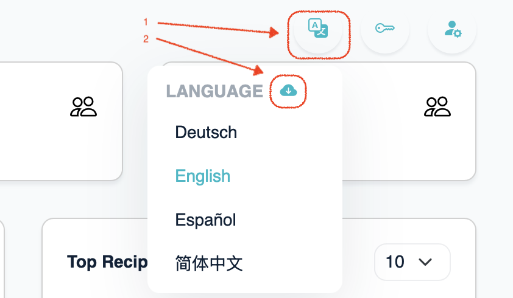

Translate EE to your local language
Download language files
You can download EE language files after login as global admin:
- Click the language icon on top-left page
- Click the small cloud icon to download all translation files in a zip package.

How to translate:
- Unzip the downloaded zip file.
- Copy
en_US.json to a new file named in your local language code. e.g. de_DE.json.
- Translate the copied
de_DE.json file.
How to test your translation
- Upload translated JSON file to directory
/opt/iredmail/conf/locales/ on iRedMail server.
- Make sure it's owned by correct user/group, then restart
iredmail service to load it:
chown iredweb:iredweb /opt/iredmail/conf/locales/*.json
chmod 0555 /opt/iredmail/conf/locales/*.json
systemctl restart iredmail
- Login to EE web ui as global admin, domain admin, and end user, check around
and verify your translation.
Do not forget to send your translation to iRedMail team,
so that others can benefit from it. :)